O projektu
Prijatelji znani i neznani, ljubitelji muzike, dobro došli! Ovo je muzički projekat Damjan od Resnika, nastao radi sviranja autorskih pesama sa prijateljima.
Ove pesme čuvaju čitav jedan svet. Većina pesama nastala je početkom 2000-ih godina, dok sam studirao. Obično bi prvo nastali tekstovi, a posle akordi i melodije, na raznim druženjima, kampovanjima i slično. Kada se nakupilo pesama, tražio sam gde bih snimao te pesme, pa sam napravio studio i počeo izbacivati demo snimke. Tražio sam s kim bih svirao pa sam zvao prijatelje muzičare. Neki su dolazili za snimanje, neki za svirke, svako kako može.
Pošto se ekipa često menjala i bilo je teško ustaliti se za svirke, pravili smo javne probe na kojima je publika mogla da nas čuje. Te javne probe smo obožavali jer smo mogli isprobavati pred publikom bez opterećenja.
Damjan od Resnika je suštinski eksperimentalna muzika - pesme još uvek žive i razvijaju se i niko ne zna šta će od njih ispasti.
Mnogo muzičara je prošlo kroz ovaj projekat, a sa svakim od njih pesme su dobijale drugačiji fazon - neke povuku na rokanje, neke na ambijent, reggae, gypsy punk... Tako ista pesma postaje uvek nova i drugačija. Neki donesu autorske pesme, pa projekat postaje bogatiji. Vremenom, neki od prijatelja muzičara su otišli preko, neki imaju svoje projekte, neki porodične obaveze, ali svako je nešto ostavio i nadam se da ćemo svirati opet. I sam sam dugo vremena bio u obavezama, odselio se, ostao bez studija, ganjao razne poslove, zapostavio muziku.
Sada se lagano vraćam pesmama, i nadam se da ćete mi svi u tome pomoći :)
Ovim pesmama trebaš ti. One ne mogu živeti bez tebe.
Muzičari
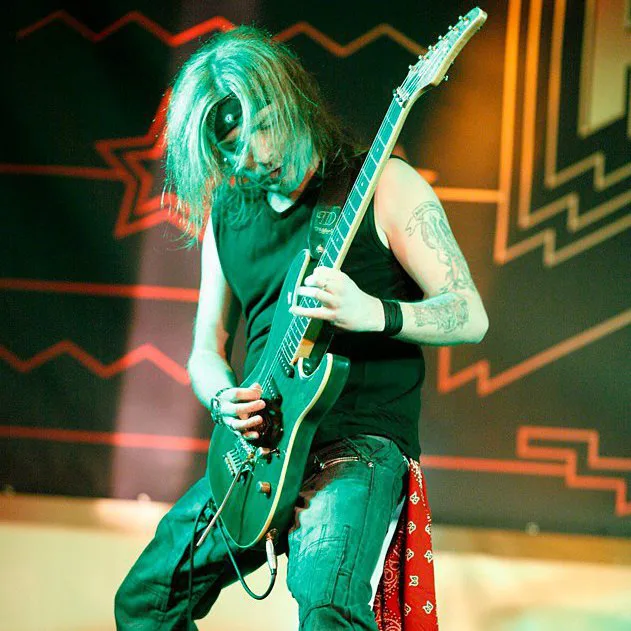
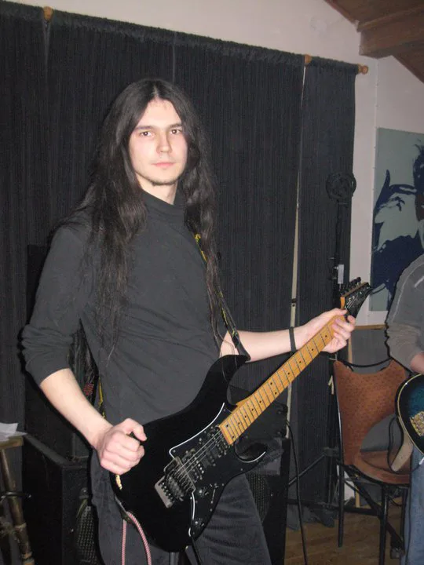
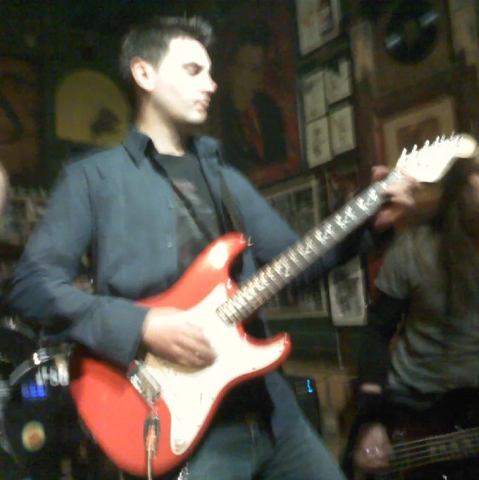
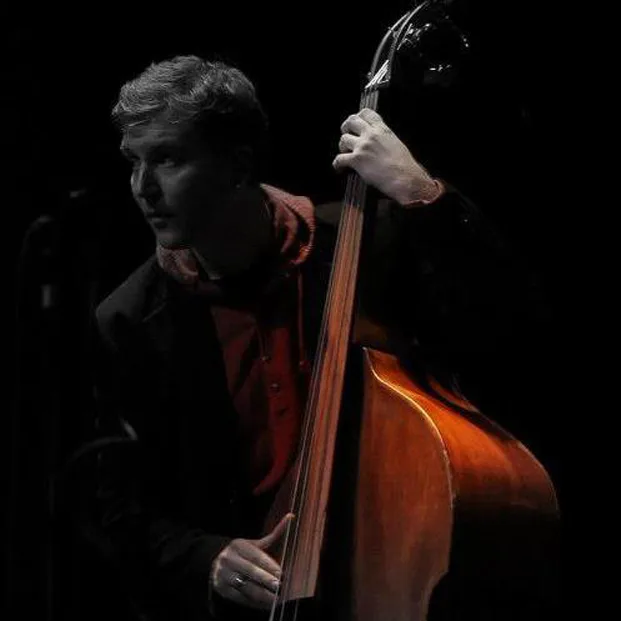
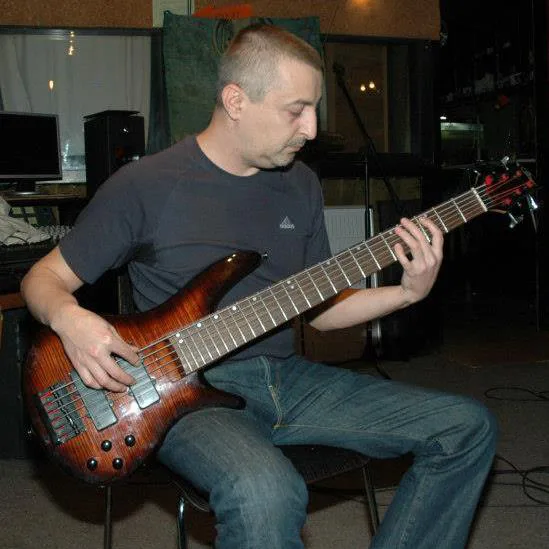
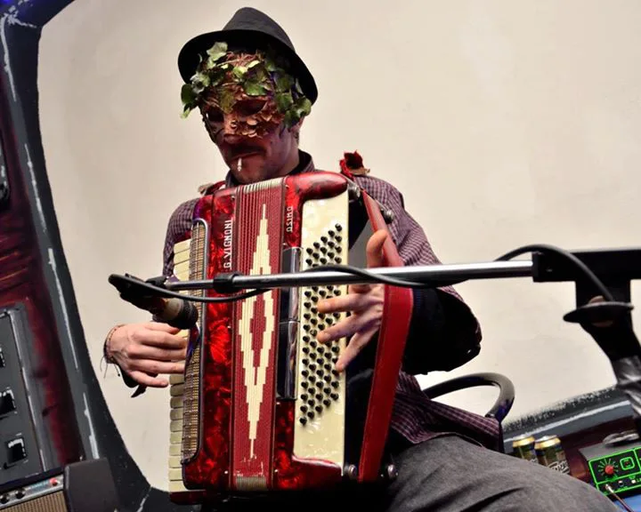
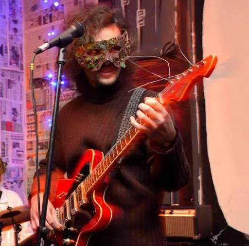
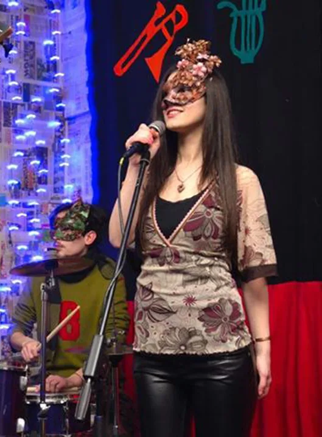
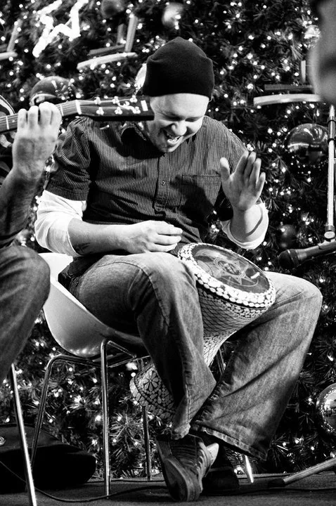
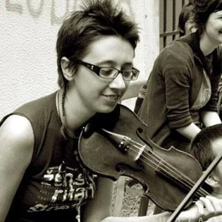
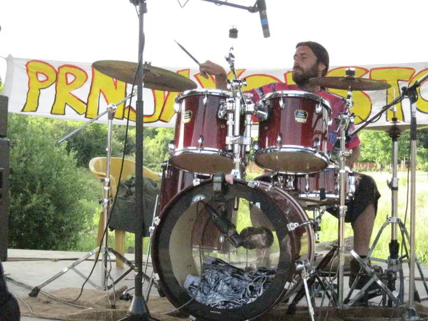
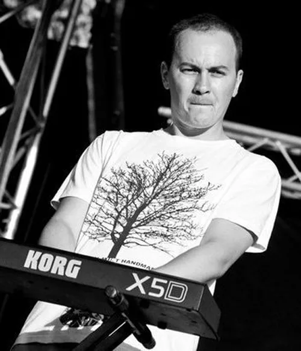